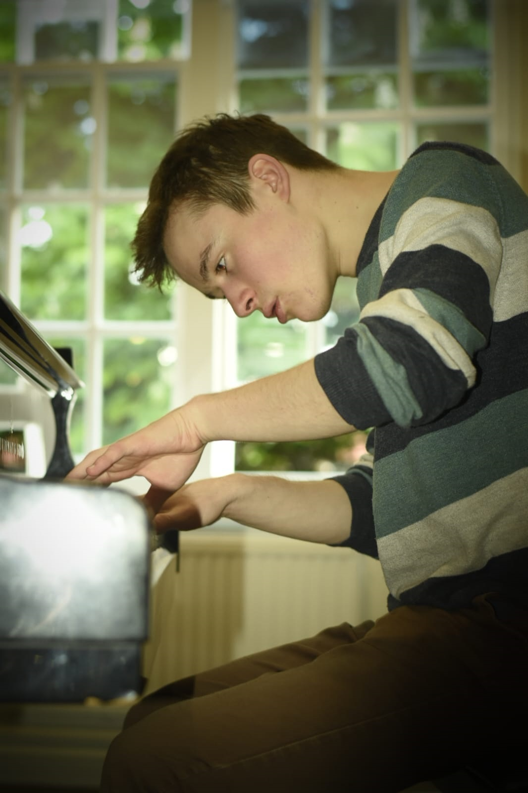
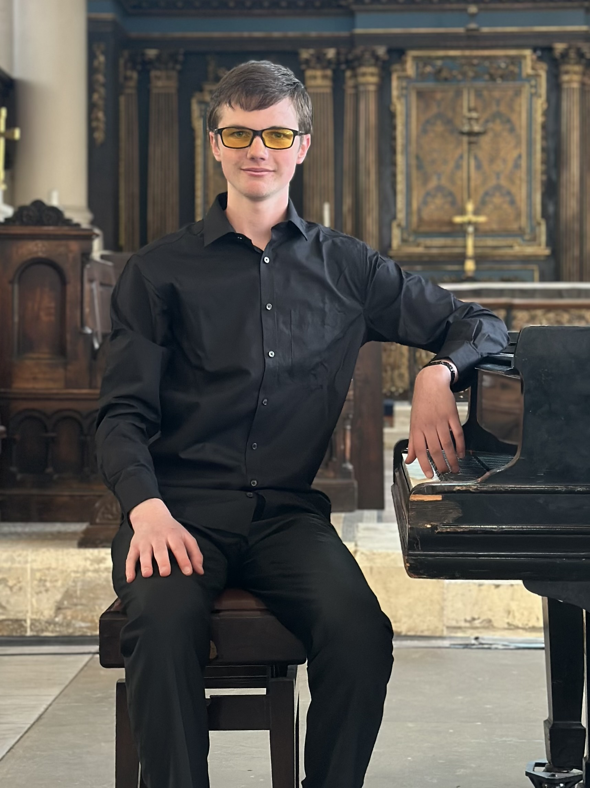

Spreading music across London and the Chilterns.
The MetroLand Music Festival is a new not-for-profit chamber music festival, raising money for Barnardo’s, a charity that means a great deal to us and the communities we serve. We are based around the historic “Metroland” region, and feature concerts in Amersham, Chalfont St Giles, Harrow and central London. We showcase up-and-coming young musicians, including students and graduates of the most prestigious conservatoires and universities.
We like our concerts to appeal to a diverse audience, and they are therefore often themed around timeless topics which are at the heart of our world. We are especially dedicated to performing new music by emerging young composers, and we are in the process of setting up an annual Young Composers Award, to nurture the performance of new music.
We are currently in the process of planning our 2027 season. Stay tuned on this page for updates!
Saturday 28th February (1pm) ▪ St Pancras Clock Tower (NW1 2AR)
Yazdi Madon, a pianist studying at the Royal College of Music, performs works by Beethoven, Prokofiev, Scriabin and Falla.
Beethoven Piano Sonata No. 6
Scriabin Mazurkas Op. 25 No. 1, 3 & 4
Prokofiev Piano Sonata No. 2
Manuel de Falla Fantasia bætica
Saturday 14th March (7pm) ▪ All Saints Church Harrow Weald (HA3 6DQ)
Solo recital by pianist and composer Edward Harris-Brown, featuring works by Beethoven, Brahms & Edward Tait.
Beethoven Piano Sonata No. 28
Edward Tait Fruhlingslied
Brahms Piano Sonata No. 2
Saturday 21st March (1pm) ▪ Chalfont St Giles Parish Church (HP8 4QF)
Harold Lee and James Mayhew, from the Royal Academy of Music, present a lunchtime recital of works for oboe and piano.
Telemann Oboe Sonata TWV 41:a3
Poulenc Oboe Sonata
Alkan Grande Etude Op. 76 No. 3
Kalliwoda Morceau de salon
Saturday 4th April (6:30pm) ▪ Amersham Free Church (HP6 6AJ)
Luca Weed and Edward Tait, former Beacon School students, play romantic and late-romantic classics by Brahms and Elgar, as well as a world premiere.
Brahms Scherzo in C minor
Mozart Violin Sonata No. 24 in F major (1st movement)
Edward Tait Ballade (WP)
Elgar Violin Sonata

Edward Tait is a British composer, studying at the Royal Academy of Music, with Gareth Moorcraft and Louise Drewett. His music has been performed across the United Kingdom, Ireland and the United States, at venues including the Royal Festival Hall, St John’s Smith Square and Westminster Abbey. He has also received performances by renowned ensembles like the London Sinfonietta, Carducci Quartet, Orion Orchestra and Lloyd’s Choir, and he won the NCEM/BBC Young Composer Award in 2026.
Edward is founder and artistic director of the MetroLand Music Festival, and he is currently composing a song cycle, based on original texts by Mollie Mardel.

James Mayhew is a pianist in the third year of his undergraduate degree at the Royal Academy of Music, where he studies with Ian Fountain. He studied under Hilary Coates and Joseph Tong for four years at Wells Cathedral School, reaching the finals of its concerto competition with the 1st movement of Tchaikovsky's Piano Concerto No. 1, and more recently won 2nd place at the Oxford Piano Competition for Aspiring Professionals.
Some recent highlights include learning and performing Liszt's notoriously difficult and lesser-known Spanish Fantasy, working with conductor Colin Currie in performances of John Adams' Son of Chamber Symphony and Steve Reich's Double Sextet in the Duke's Hall at the Royal Academy of Music, and giving an all-Alkan half-hour recital as part of the Royal Academy's Summer Piano Festival in the David Josefowitz Recital Hall, featuring some of his most challenging works.
As a composer he has had his works performed numerous times, and has played many of his taxing solo works, most notably his Fugue-Fantasy. James enjoys exploring lesser-known works including those by Alkan and Feinberg, known for their extraordinary difficulty, and loves collaborating with other musicians whenever possible.
We are a not-for-profit venture, and a large portion of our sustainability depends on our kind sponsors and patrons. By supporting this project, you’re not only helping bring great chamber music to the region, you’re also contributing to a cause that transforms the lives of vulnerable and young people. As a thank you, all donors will be listed on our website and in our concert programmes. Donate £50 or more, and you’ll receive a free ticket to the entire upcoming concert season! Every pound makes a difference. Please consider donating through our JustGiving page or by contacting us through our social media accounts (links below). Thank you in advance!
We'd like to give many thanks to our current sponsors, Alan Baskeyfield, Tiffany Qiu and Elliot Teo, as well as many others who wish to remain anonymous.
Follow Us
YouTube Instagram Facebook Mailing List